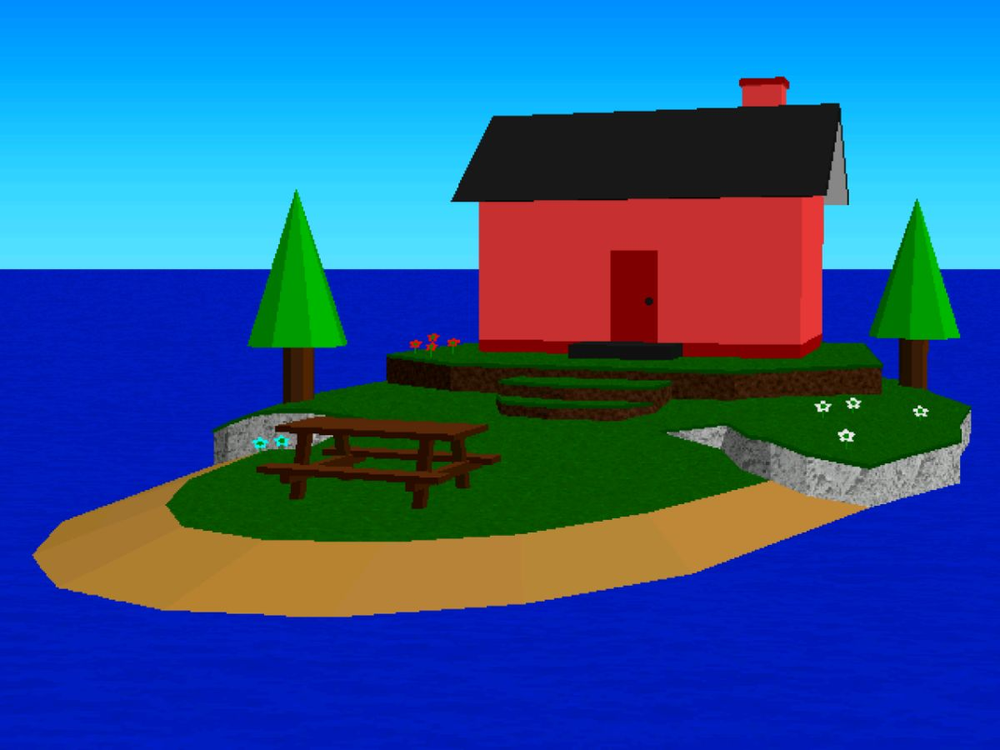

3D Workers Island is a nonlinear metafictional Digital Horror story written by Tony Domenico (also known for Petscop). The narrative is told through several images that the reader can flip through and read, either by clicking on the screen to progress or using the arrow keys to switch back and forth.
The story concerns a mysterious screensaver (simply entitled 3D Workers Island or 3dwi.scr for short) with no known origin, which features a number of named "workers" who independently move around, perform actions and interact with each other on their little island. These interactions are said to be dynamically generated in real-time by a complex pseudo-AI algorithm, rather than being hard-coded.
Through a number of forum posts and website updates in the year 1999, the story looks at the online communities that investigate and interpret the seemingly-innocent software, which may not be as distant from all the viewers as it initially appears.
3D Workers Island was released on October 25th, 2024, repurposed from an ambitious "fake screensaver" video project that was scrapped during development.
that was scrapped during development.
It can be read either here or here
or here . An unofficial video adaptation can be viewed here
. An unofficial video adaptation can be viewed here .
.
This story contains examples of:
- Abusive Parents: Pat is often cruel to Amber, and is even shown shoving her against the wall at one point. If PLawler's posts are to be believed, Pat is Amber's mother, making this behavior even more disturbing. Worse still, some users have reported seeing real photographs of a girl who resembles Amber in various states of distress, and it's implied that PLawler might be Pat.
- Ambiguously Human: It's implied that PLawler might in fact be the Worker Pat, that Amber and Holland are her daughters both in reality and in the screensaver, and that Grace is a human being who somehow got trapped inside the virtual world. If you believe this, then this also implies that Joe and Rebecca were also real humans who ended up in the screensaver.
- Ambiguously Related: No relationships are explicitly established between the workers, but PLawler believes that Pat is the mother of Amber and Holland. It's strongly implied that PLawler is Pat, which gives this some more credence, but also makes the relationship more disturbing, given the cold manner in which PLawler talks about Amber and the abusive behavior the worker Pat shows towards her.
- Ambiguous Situation:
- The users of the 3dwi.scr Discovery Boards and Inside 3dwi.scr may or may not be Unreliable Narrators making things up. Who's telling the truth and who's making up rumors is up to reader interpretation.
- What we see of the screensaver is a slideshow of primitive, low-polygon count graphics which can make it hard to tell exactly what's happening. Pages 56-60 might show Pat slapping Amber, or pointing at something in the distance. 95-105 might show Holland rejecting a hug from Amber, them playing in the sand, or Holland being scared of something Amber said or did. 111-121 is often interpreted as Pat beating up Amber, but it could be a verbal argument. 216-226 is generally interpreted as Pat and Rebecca having sex in front of Amber, but it could be a fight, or just a weird collision glitch.
- The question of who created the screensaver in the first place is left completely unanswered. There are faint hints that Pat, Amber, or Grace might have had something to do with its development, but it could also be that someone unseen is responsible.
- Does the screensaver really just have an advanced algorithm that simulates behaviors? Do the workers have true Artificial Intelligence? Or are they human minds trapped in a virtual world?
- Anachronic Order: The story is told in a nonlinear fashion through old forum posts, websites and chatlogs.
- And I Must Scream:
- The Inside 3dwi.scr 4/24/99 update mentions "Grace's Guilt," and implies that Grace is trapped within the screensaver, forever fictionalized and haunted by reality.
- It can be interpreted that Amber might have it even worse than Grace. She's also trapped in the screensaver's world, but on top of that, she's constantly abused by Pat (and possibly Joe and Rebecca), until she collapses from injuries, exhaustion, and neglect. At this point, she is transformed into a small red sphere that can do nothing but emit muffled screams of agony which nobody pays attention to, until she dies and is revived for the cycle to begin anew. Amber can be seen hauling a wheelbarrow full of red balls, each one representing her suffering a slow, painful death, and one user appears to have a mental breakdown after pondering how many spheres might be on the ocean floor.
- Arc Symbol: Red spheres appear in multiple (seemingly) unrelated contexts. They ultimately represent Amber's suffering, as her model will apparently turn into a red sphere over time as her health degrades.
- Awful Truth: The "true" nature of 3dwi.scr isn't discussed openly by those who believe it, because of the idea that it can never be unlearned.
- Bitch in Sheep's Clothing: PLawler, while initially seeming friendly and cheerful, also shows patronizing and authoritarian sides in her site moderation. If one user's accusations are true, she may be much worse than that.
- The Blank: None of the titular "workers" are rendered with any facial features, their emotions only being indicated by vague body language. The "Inside 3dwi.scr" website implies that this is not always the case.
- Bloodier and Gorier: The "Inside 3dwi.scr" website contains much more graphic imagery than the Discovery Pages. Whether or not this reflects the reality of the screensaver is debated by members of the two sites.
- Body Horror: "Cutilacunae" is a medical condition which GoodKid says she made up, but the symptoms she describes are quite horrific. It involves a gradual and painful loss of skin, beginning with redness and irritation before gaps appear, progressing to only having isolated patches or "islands" of skin remaining, and ending with a completely missing epidermis.
- Broken Base: In-Universe, whether or not 3D Worker Island is simply an innocent wholesome screensaver, or if it hides disturbing secrets. The Discovery forums created by PLawler, the main site for cataloguing and discussing the screensaver, hold the firm opinion that the screensaver is completely innocent and that all the alleged disturbing elements are made up. Anyone who attempts to discuss the darker interpretations on the Discovery forums is swiftly banned by PLawler. For this reason, a user split off and created their own site, "Inside 3dwi.scr", which exclusively catalogues the disturbing elements.
- Butt-Monkey: According to reports on the "Inside 3dwi.scr" website (which are also discussed on the Discovery Boards), Amber is supposedly the character who gets tormented the most by the other workers and is the only one who has been seen suffering from Worker Degeneration.
- Color Motif: Red is a reoccurring motif throughout the story, becoming prominent whenever the themes of abuse and trauma are discussed, most significantly with Amber's "degeneration" and implied death due to the abuse inflicted on her.
- Content Warning: A warning is shown In-Universe (though it also serves the reader in the real world) on the first page of "Inside 3dwi.scr", stating that the site contains themes of violent abuse and torture.
- Disguised Horror Story: According to one group of fans, the cartoonish and idyllic-looking screensaver contains a number of dark secret features.
- The Faceless: Throughout the entire story, Grace is never seen from the front, even in the character introduction screen and the fan sites' icons.
- Fictional Video Game: Technically, a non-interactive screensaver.
- Foreshadowing: A pile of red spheres is seen being carried in a wheelbarrow by Amber a while before anyone explains their alleged significance.
- Harmful to Minors: A common interpretation of pages 216 to 226 is that it depicts Pat and Rebecca having sex, seemingly uncaring that Amber (who's a child and implied to be Pat's daughter) is present. This is reinforced by PLawler (who's implied to be the same as Pat from the screensaver) expressing attraction to Rebecca. Willingly exposing a minor to sexual activities is considered child sexual abuse even if the minor in question is not directly involved in those acts.
- In-Series Nickname: The screen-saver is often referred to as "3D Whiskers" by the fan-base, a literal reading of the name of the program: "3dwi.scr"
- Jump Scare: The story itself does not contain any jump scares, but In-Universe, it's mentioned that the PJR Pin is often followed by an earsplitting scream.
- Karma Houdini: If the implications PLawler and Pat from the Screensaver are one and the same, this is a strong possibility. While it's implied she was run off her website by the other forum discussing 3D Workers Island, the chat sections establish the program still works to this day and in fact seems to freeze and hide the results of her abuse instead of allowing it to be freely observed anymore, suggesting that she might have fled the internet completely before taking steps to censor her program from further investigation from now on. It's entirely possible she will continue to "rest" for as long as she likes while Amber continues to suffer without ever getting any comeuppance.
- The Klutz: Holland is repeatedly shown falling over. It is possible that she's either the youngest of the workers or that something is affecting her movement that we're unable to see.
- Kuleshov Effect: The narrative is presented to us as parts of 3D Workers Island fan-sites intercut with short clips of the screensaver. These screensaver clips are innocuous by themselves, but often take on more meaning with the posts that accompany them. For example, right after a user comments that PLawler is always online, we see a clip of 3D Workers Island where Pat is using a laptop. Like the rest of the story, the meaning of this is ambiguous. Is it suggesting that Pat represents, or even is, PLawler? Or is it meant to make us see patterns that don't exist, reflecting the possibility that the dark secrets users claim to see in the screensaver are reading too much into it?
- Lack of Empathy: PLawler is often a cold and unempathetic woman, especially when the topic of Amber is brought up. Despite Amber being a child, PLawler thinks of her as lazy for not doing enough work, even though Amber is shown doing chores like mowing the lawn or disposing of red balls in a wheelbarrow. When other posters are criticizing how the stories of the "Inside 3dwi.scr" website mostly involve Amber being harmed, PLawler seems to think that the weird thing here is people being concerned for Amber's well-being, rather than Amber being singled out as a victim for no apparent reason. This is fitting with the implication that PLawler is Pat from the screensaver, one of the workers responsible for Amber's abuse. This would indicate that Pat is using Amber's perceived laziness to rationalize abusing her, which also explains why she can't understand how other people sympathize with Amber.
- Maybe Magic, Maybe Mundane: Is PLawler Worker Pat, or just an overbearing mod? Is Amber a real girl trapped in a screen saver, or just a bunch of pixels with a basic AI? Are the creepy events like Amber turning into the red balls actually happening, or just creepypastas told by bored forum users? We never actually know.
- Media Transmigration: The idea of individuals from the "real world" being transported to (or trapped in) 3D Workers Island, as well as other forms of media, is mentioned multiple times.
- Metafiction: The story is about a fictional screensaver, the various mysteries it entails, and the fanbase that discusses and documents it.
- Mind Screw: 3D Workers Island has a rather confusing narrative told in a non-linear fashion by Unreliable Narrators, which leaves many things ambiguous and lacks a proper resolution. It may take several reads and/or watching an analysis video to understand what's going on, and even then, much of it is up to subjective interpretation.
- Mirror Character: Pat and PLawler have some concerning similarities, even mentioned by PLawler herself. Both share the same first name and both are the mother of two children. Of course, some segments imply a different story...
- Noodle Incident: Whatever is going on with the "Sam Ferraro business" mentioned in the 4/25/99 update of the Inside 3dwi.scr website is never elaborated upon further. The only details we get are that it involves a rare (possibly fabricated) "black shirt" Amber is occasionally seen wearing, along with the detail that the photo used "doesn't match any known, publicly released photos of him." As it doesn't come up again and seems even less connected to anything else on the website, it's a contender for a Red Herring highlighting how rumor mills can distort the truth even if there is something sinister in the program.
- Nothing Is Scarier: Several examples, in and out of universe. There is never an explanation given as to what events in the story are truthful or fabricated. Amber's abuse is left completely unspecified. We're never shown the inside of the red house and any blatantly graphic material described is never explicitly shown.
- Obsessively Hyperfixated: Most of the Discovery Boards users are completely obsessed with the screensaver, watching it for hours at a time, with some even having a computer that's not used for anything but running the screensaver. What makes it so addictive is that the characters have an advanced AI simulation which causes viewers to feel as if they're watching real people living in a virtual world.
- Period Piece: The story's events take place mostly in the year 1999, with the level of technological sophistication that entails, as shown by the download of a 4.22-megabyte file taking twenty minutes, which is hilariously slow by today's standards.
- Production Throwback: There are multiple, across various things that Tony has made.
- The idea of a "discovery pages" website for an obscure piece of software is brought back from Petscop. Actually, there's two: the main one ran by PLawer that's more innocent, and the Inside 3dwi.scr website that covers the stuff that she doesn't want you to see.
- The fictitious skin condition "cutilacunae" mentioned in-story is a reference to the same skin condition that appears in Good Sky
 , an early Tony Domenico work that was written a whole eleven years before the release of 3D Workers Island.
, an early Tony Domenico work that was written a whole eleven years before the release of 3D Workers Island. - Amber is also the name of one of the Pets from Petscop. And much like her, the Amber in 3D Workers Island is also a ball. But she doesn't start as one- rather she has her body get crushed into one by some unknown means.
- Psycho Lesbian: PLawler says she has an "attraction" towards Rebecca, and it's likely no coincidence her (potential) screensaver counterpart (potentially) has sex with Rebecca in front of Amber as part of her abuse.
- Red Is Violent: Amber's Worker Degeneration (i.e., turning red in hue and compressing into a red ball) is described as "representing malnutrition, dehydration, and/or mutilation". Whatever's going on, it's not pretty.
- Resurrection/Death Loop: Amber's Worker Degeneration can be interpreted as such. Over time, her model will gradually turn red, and eventually morph into a red sphere which emits muffled screams. This transformation is linked to injury, neglect, and bad health. Eventually, the screams coming from the sphere will stop, and a new Amber will pop out of the house, though the sphere itself remains where it is, meaning that Amber is now existing alongside her dead body. Eventually, this Amber will suffer degeneration and die again, and when too many orbs build up, she'll dispose of them by putting them in a wheelbarrow and dumping them into the ocean.
- Retraux: The websites, software and even the interface are meant to resemble a late-90s computer system.
- Scrapbook Story: The story is told through various snapshots of websites and occasional sequences of 3dwi.scr screensaver footage.
- Shout-Out:
- The location of 3dwi.scr is a clear nod to Johnny Castaway, an existing screensaver that's even mentioned within the story itself.
- Aesthetically, 3dwi.scr is meant to evoke LEGO Island.
- The Pagemaster is also brought up in one of the forum posts.
- The Inside 3dwi.scr website is also a clear homage to the "haunted gaming" subgenre of Creepypasta with a blend of internet theorist sleuthing for good measure, something that Tony is very familiar with considering the appeal of his most popular project.
- The location of 3dwi.scr is a clear nod to Johnny Castaway
- Show Within a Show: The titular 3D Workers Island is a screensaver which some people watch obsessively or habitually.
- Significant Name Overlap: "Pat" is the name of one of the 3D Workers, and of the 3dwi.scr Discovery Board's head administrator. On top of that, both Pats are "coincidentally" mothers of two children. It's implied that the screensaver's Pat and the forum's Pat might be the same being, with the screensaver's character possibly being able to access the real-world internet through her in-universe computer.
- Suddenly Voiced: According to some users, characters in the normally silent screensaver will, under certain conditions, make sounds which include a sudden scream.
- Uncertain Doom: According to a chat log from an unknown time in the future, the Discovery website fell apart soon after the posts featured in the story, for unstated reasons connected to the theory website.
- Wham Shot: The scene where Pat is shown reading the Discovery forum inside the Screensaver right after GoodKid is banned, as it strongly implies PLawler is Pat herself and introduces the notion that the Screensaver isn't just a learning program or a digital representation of a real world abusive situation in-universe, but some kind of digital world that Amber is trapped in and subject to Pat's abuse within.
- The Woobie: Poor Amber. It's acknowledged in-universe, with users from the Discovery Pages who know about the darker parts of the program pretty much all unanimously agreeing that their favorite character is Amber. Notably, PLawler is confused as to why people care so much about her.
- You Do NOT Want to Know: Several users who have uncovered "the truth" about the Island warn other users off from digging too much into it, warning that once you learn the Awful Truth, it's impossible to stop trying to dig up more information, and it'll soon develop into an obsession.